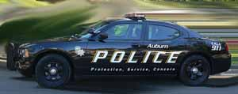

A organização da Polícia nos Estados Unidos é uma coisa meio embaralhada para entendermos, justamente porque o modelo que adotamos no Brasil é ímpar, e nos países dos quais a copiamos, como Portugal, já foram feitas modificações para adequar aos tempos modernos. Assim, vemos nos filmes e “chutamos” como funciona, mas todas as vezes em que procurei reunir informações sobre o tema, acabei me perdendo e não entendendo muitos pontos, seja pela falta de interesse no tema por estudiosos brasileiros, seja pelo meu inglês capenga.
Porém, com a ajuda de um colega que volta e meia está por lá, acho que consegui reunir informações corretas para entender de vez a estrutura e funcionamento das polícias dos EUA, como a NYPD, LAPD, etc. Vamos lá.
As Polícias mais comumente retratadas nos filmes de Hollywood são o FBI, que equivaleria à nossa PF, e as municipais, como a de Nova Iorque e Los Angeles. Existem porém outras instituições que cumprem papel policial, mas vamos nos ater às últimas, as mais famosas por aqui.
A carreira do policial das cidades é dividida em cargos, e não por patentes. Apesar do nome, nada tem a ver com o modelo militar de organização, com diversas patentes. Os cargos existentes são:
- Officer – em português, Oficial, ou popularmente para nós, Guarda.
- Detective – é o Detetive, cargo que pode ser alcançado opcionalmente após 2 anos de profissão, por concurso interno.
- Sargent – o Sargento é o cargo ocupado pelo policial após 4 anos de profissão.
- Liutenant – Tenente, após 6 anos.
- Captan – Capitão, após 8 anos de exercício na função policial.
Depois de 4 anos, ele poderá ser promovido à Sargento, tendo ele já passado para Detetive ou não. Neste ponto, caso ele não seja ainda Detetive, poderá fazer o exame, e se aprovado nas provas teórica necessárias, passará a Detetive já no cargo de Sargento, deixando de usar o uniforme, e a partir daí recebe uma gratificação extra pelo curso de investigação.

Se ele não quiser ser Detetive, mesmo assim, para ser promovido a Sargento, deve fazer exame que cobra conhecimento de investigação, isto porque ele poderá ser chefe dos Oficiais, e estes devem saber preservar os locais de crime para o bom trabalho dos Detetives. Mas se ele quiser ser Detetive, mas não for aprovado na prova teórica para investigação, será Sargento uniformizado, e poderá chefiar as equipes de Oficiais, que fazem o serviço ostensivo nas ruas, ou cuidar da parte burocrática da delegacia, como triagem das ocorrências, decidindo o que deve ser repassado para os Detetives e que será investigado, manutenção de armamento, cautela de presos, etc.
Depois de 6 anos, o policial poderá ascender ao cargo de Tenente, e passa a ter como função a supervisão das investigações, decidindo que policial vai investigar cada caso, avocar investigação em andamento e repassá-la para outro Detetive, chefiar diligências externas, etc.
Por último existe o cargo de Capitão, que é quem manda no distrito policial (delegacia). Ele dirige toda a parte administrativa, por exemplo, nomeando as duplas de policiais. O Capitão também fica habilitado a concorrer ao posto de Chefe de Polícia, que lá é eleito. Isso mesmo, é uma eleição, é a comunidade residente na área do distrito quem elege o Chefe de Polícia, e é realizada uma eleição, com votos, etc.
Até o cargo de Sargento, é sempre grande o número de vagas disponíveis, sendo necessário para a promoção somente que o Oficial ou o Detetive passem nos exames internos. Já para os cargos seguintes, seu preenchimento se dará de acordo com a necessidade e número de vagas, podendo ser mais demorado.
As forças policiais das cidades não são tão numerosas como nas grandes metrópoles brasileiras, e por isso, quando os policiais que estão em determinada ocorrência percebem que o poder de luta da polícia local não é suficiente, pode solicitar auxílio de um grupamento de fuzileiros navais, que atuarão pontualmente, fazendo o que for necessário por exemplo em casos de confronto armado, se retirando logo após, sendo os trabalhos reassumidos pela polícia.
Para se tornar policial, não se presta exatamente um concurso público como no Brasil. Lá, as forças policiais fazem contratações. É comum ver nos sites oficiais, por exemplo, “NYPD Hiring”, que significa NYPD Contratando! Estas contratações ocorrem quase que o tempo todo, e não há um grande evento, com milhares de inscritos, como por aqui.
Apesar de ser feito externamente, as provas de seleção são um evento bem pequeno. Lá existe grande oferta de vagas em empregos, e a população é relativamente qualificada para diversos trabalhos, então a procura para vagas nas policiais é menor.
Então o candidato é aprovado na prova, entrevistado, e se tudo correr bem, ele começa a Academia de Polícia. O tempo de duração do curso varia bastante em cada cidade, que tem autonomia plena nesta decisão, mas a média é entre 6 meses a 1 anos de curso, e o aluno-policial literalmente mora na Academia, onde recebe aulas sobre Direito, tiro, defesa pessoal, direção defensiva, etc. Durante este tempo, os alunos-oficiais realizam atividades externas, participando de diligências com campana, blitzens policiais, etc, oportunidade em que são avaliados por sua atuação, cordialidade com o público, disciplina, comprometimento, dentre outros importantes critérios.
No post seguinte vamos falar da prerrogativa que têm os policiais para executarem suas atividades, e como é a influência de outros órgãos em suas decisões.